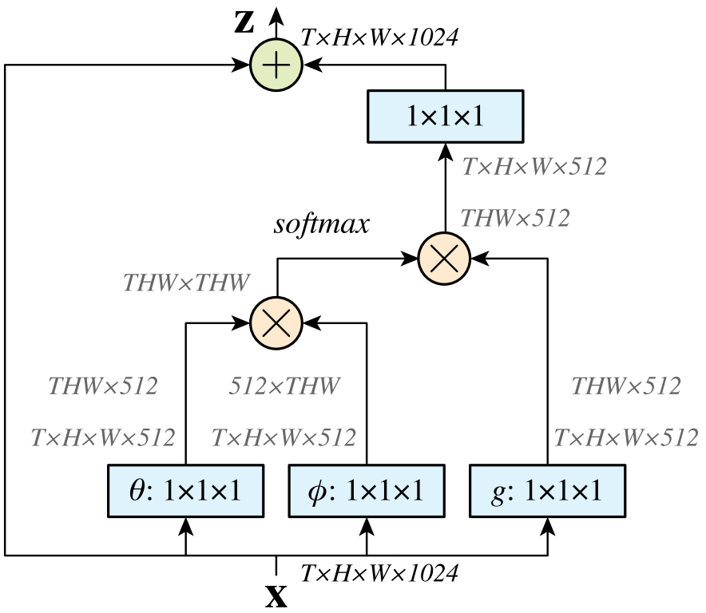

Non-Local Neural Networks¶
Capturing long-range dependencies is of central importance in deep neural networks. Both convolution and recurrent operations are building blocks that process one local neighborhood at a time. Repeaing local operations have several limitations:
it is computationally inefficient
it causes optmization difficulties
it makes multi-hop dependency modeling difficult
In this papre, the authors present non-local operations as a generic family of building blocks for capturing long-range dependencies. It is a generalization of the classical non-local mean operation [1].
Experiments on various benchmark datasets show that non-local models can compete or outperform SOTA methods on the task of video classification and image recognition.
Non-Local Neural Networks¶
Following the non-local mean opeartion [1], the authors define a generic non-local operation in deep neural networks as:
Here \(i\) is the index of an output position whose response is to be computed, function \(f\) computes a scalar (representing relationship such as affinity), and function \(g\) computes a representation of the input signal.
A non-local operation can be used together with convolutional/recurrent layers to build a richer hierarchy that combines both non-local and local information.
Let \(g(\mathbf{x}_j) = W_g \mathbf{x}_j\), the authors present several instantiations:
Gaussian. We have:
Embedded Gaussian. A simple exension is to compute similarity in an embedding space. We consider
The authors argue that the self-attention moduel [2] is a special case of non-local operations in the embedded Gaussian version.
Dot product. We have
Concatenation. We consider:
where \([\cdot, \cdot]\) denotes concatenation.
Non-Local Block¶
A non-local block is defined as:
The residual connection allows us to insert a new non-local block into any pre-trained model, without breaking its initial behavior.
{kind=link}
Implementation of non-local blocks. The authors set the number of channels represented by \(W_g\), \(W_\theta\), and \(W_\phi\) to be half of the number of channels in \(\mathbf{x}\). This follows the bottlenect design of [3] and reduces the computation of a block by about a half.
A subsampling trick is used to further reduce computation. We have:
References¶
[1] Buades, A., Coll, B., & Morel, J. M. (2005, June). A non-local algorithm for image denoising. In 2005 IEEE Computer Society Conference on Computer Vision and Pattern Recognition (CVPR'05) (Vol. 2, pp. 60-65). IEEE.
[2] Vaswani, A., Shazeer, N., Parmar, N., Uszkoreit, J., Jones, L., Gomez, A. N., ... & Polosukhin, I. (2017). Attention is all you need. In Advances in neural information processing systems (pp. 5998-6008).